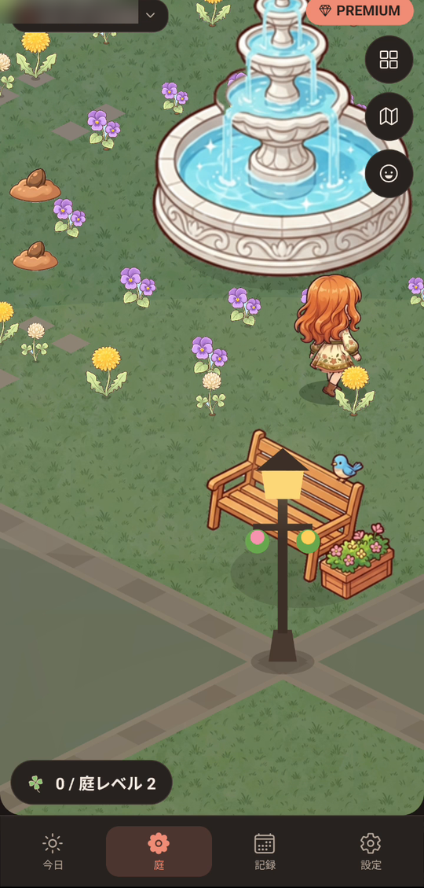
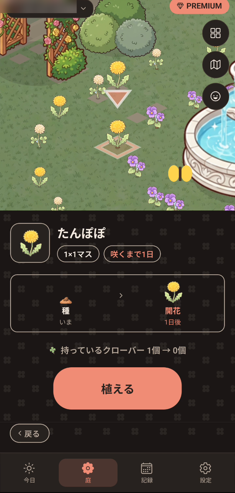
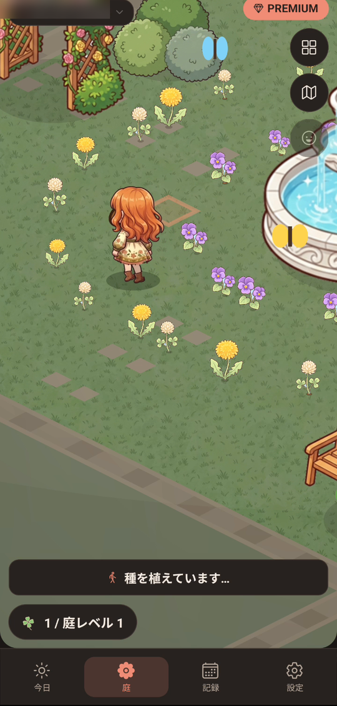
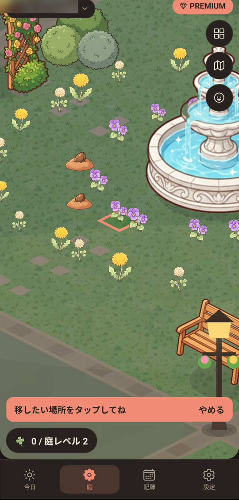
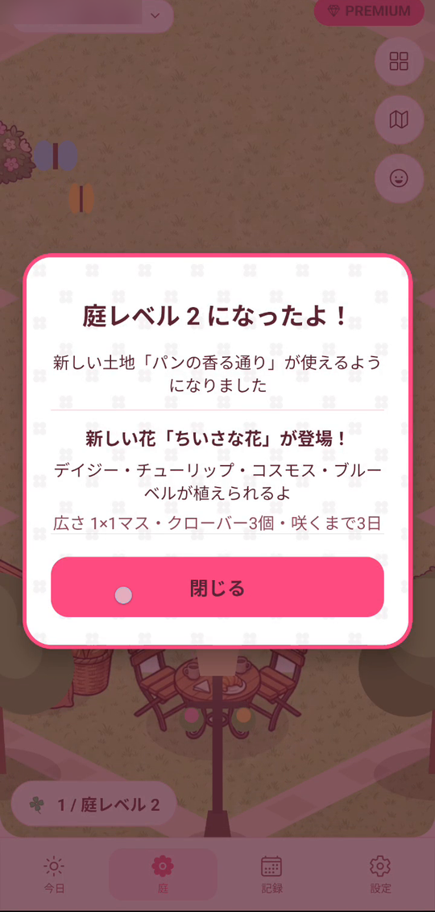
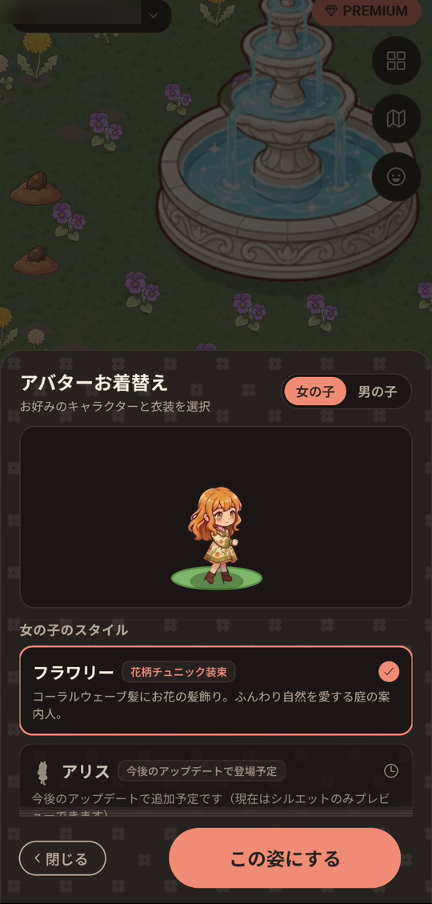
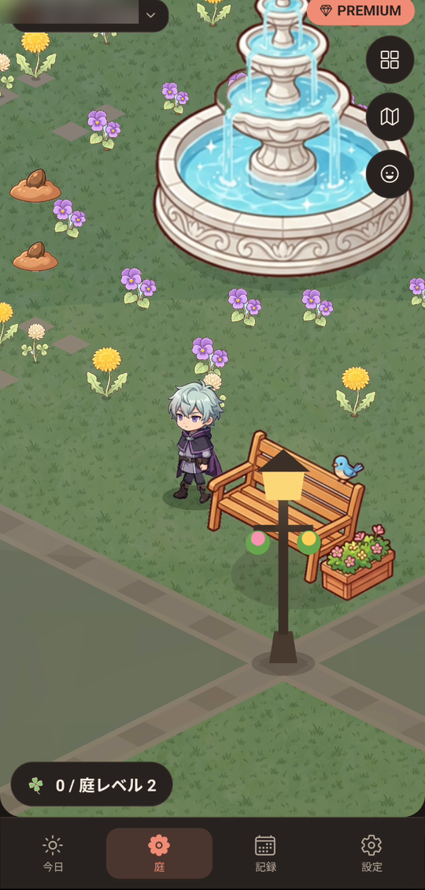

📖 はじめに（この画面でできること）
「庭」タブは、集めたクローバーを使って花を植え、庭（街）を育てる画面です。画面はドラッグで移動、ピンチなどで拡大・縮小できます。アバターが庭の中を散歩したり、花を見たり、ベンチに座ったりする様子を眺めるのも楽しみのひとつです。
初めて開いたときは、最初に歩くキャラクター（アバター）選びと、庭の使い方ガイドが表示されます。

🛠️ 詳しい操作手順
種を植える
地面の空きマスをタップすると、植えたい花を選ぶシートが出ます。花ごとに「必要なクローバー数」「咲くまでの日数」「広さ（◯×◯マス）」と、植えた後の成長の流れ（種→芽→つぼみ→開花が何日後か）を確認してから「植える」で確定します。植えると、アバターが植える動作をします。
- クローバーが足りない・広さが足りない・庭レベルが足りない花は選べません（理由が表示されます）。
- 噴水やベンチなどの飾りがある場所には植えられません。


花の成長とお世話
花は日数の経過で 種 → 芽 → つぼみ → 開花 と育ちます。植えた花をタップすると、花の名前（咲く前は「種」）と状態、「あと◯日」または「咲いてるよ」が分かります。咲く日は朝9時が基準です。
花が咲く日の朝に通知を受け取ることもできます（設定の「花の通知」。初めて種を植えたときは自動でオンになります）。
花の場所を移動する（植え替え）
植えた花をタップして「場所を移動」を選ぶと、「移したい場所をタップしてね」の案内が出ます。移動先をタップし、確認ダイアログで確定すると、アバターが運んで植え替えます。
- 解放済みの別の土地へも移せます。
- 小さな花どうしなら、移動先の花と場所を入れ替えることもできます。
- 植えた日（成長の進み具合）はそのまま引き継がれます。

花をクローバーに戻す
植えた花をタップして「クローバーに戻す」を選ぶと、花が片付いて空きマスになり、植えるのに使ったクローバーが同数そのまま戻ります。気軽に植え替えて、庭の模様替えを楽しんでください。
庭レベルと土地の解放
累計で集めたクローバー（見つけた総数）が増えると、庭レベルが上がります（最大レベル9）。レベル表示をタップすると、「次のレベルまで、あと◯個」などの詳細が見られます。
レベルが1つ上がるごとに、新しい土地が1つ使えるようになります（全9か所）。レベルアップ時は、新しい土地と、新しく植えられるようになった花の段階がダイアログでお知らせされます。
- 土地の名前: はじまりの広場／パンの香る通り／ひだまり公園／時計台の前／港の見える角／古本の路地／みどりの丘／白い橋のたもと／夜市の広場
- 土地の切り替えは「場所を選ぶ」から。右側の丸ボタン「街全体を見る」で、街全体を俯瞰できます。
- まだ解放されていない土地には鍵マークが表示されます。

アバターの着せ替え
「庭」タブ右側の丸ボタン「アバター着せ替え」から、庭を歩くキャラクターを変更できます。「女の子」「男の子」を切り替えて選びます。
- フラワリー（女の子）: 花柄チュニック装束
- ノクト（男の子）: ノーブルケープ装束
- アリス（女の子）とリーフ（男の子）は、今後のアップデートで登場予定です（現在はシルエットのプレビューのみ）。

